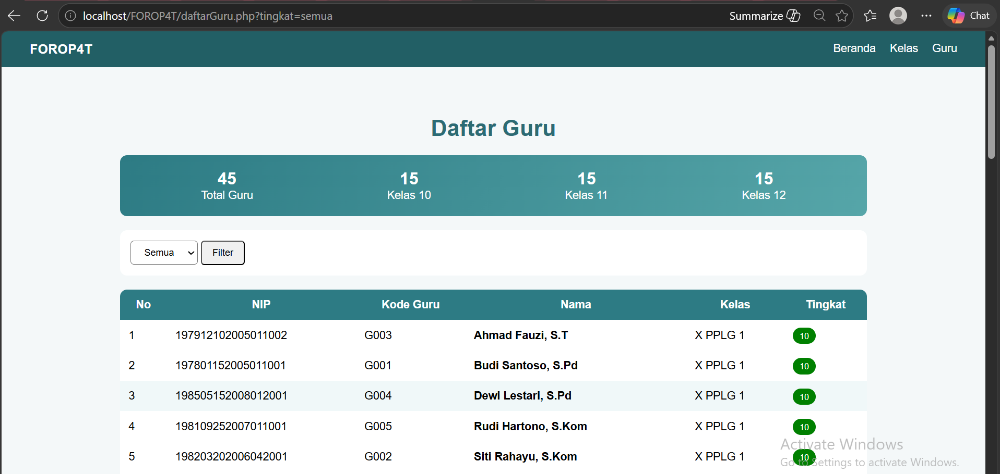
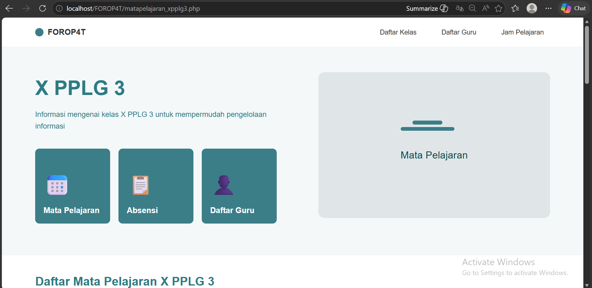

Informasi OP4T

Project ini adalah project untuk tugas sekolah KK3 yaitu tentang pengembangan Web.
Project ini adalah project untuk tugas sekolah KK3 yaitu tentang pengembangan Web.



FOROP4T adalah sebuah website yang dibuat untuk mempermudah data perkelas mulai dari data siswa, absen
perkelas serta jadwal kelas tersebut. Website ini memiliki fitur
untuk menampilkan data siswa, guru, dan mata pelajaran serta jadwal, guna untuk
mempermudah pencarian dan management data yang ada di SMKN 4 Bandung.
Project masih dalam tahap pengembangan, sehingga belum dapat dibuka ke halaman web.